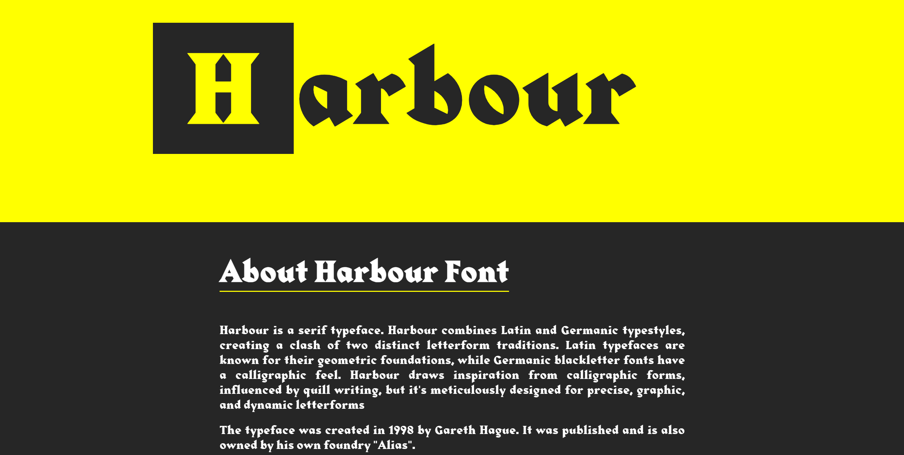
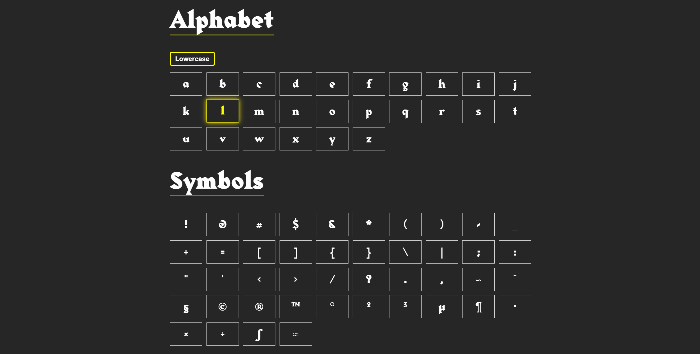
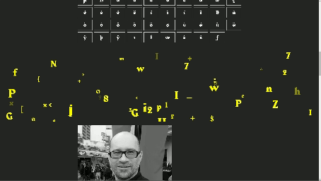

Typografie
- Beschrijving
Voor typografie bestond onze opdracht uit twee onderdelen. We moesten een lettertype kiezen dat we in Brussel zijn tegengekomen en hiervan een poster en een website maken. Het lettertype wat ik hier heb gekozen heet Harbour.
Eerst moesten we dus een poster maken met een 4 letter woord. Het was belangrijk dat de poster eigenlijk niet veel meer elementen dan de 4 lettervormen zou bevatten. Omdat het lettertype mij een beetje een middeleeuws gevoel gaf heb ik een poster gemaakt met het woord 'King'. Hierbij heb ik met alleen zwart en geel een poster gemaakt. Met de vormgeving probeerde ik het beeld van een oud familiewapen na te bootsen, aangezien ik dit wel vond passen bij het middeleeuwse.
Daarna heb ik een website gemaakt over het lettertype Harbour. Dit vond ik leuk om te doen aangezien coderen voor mij het leukste onderdeel van de opleiding is. Ik heb informatie verzameld over het lettertype, zoals de oorsprong, inspiraties en voorbeelden van waar het gebruikt wordt. Dit heb ik allemaal gepresenteerd in de website die ik geprobeerd heb netjes te structuren en daarnaast visueel aantrekkelijk te maken.
Website
 